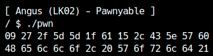
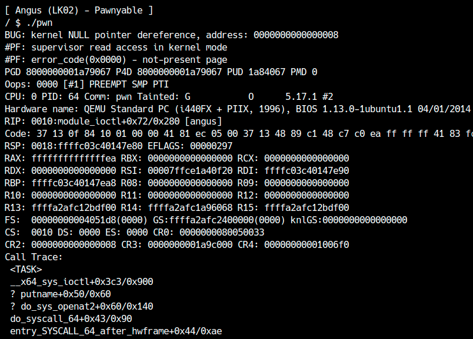
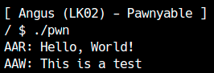
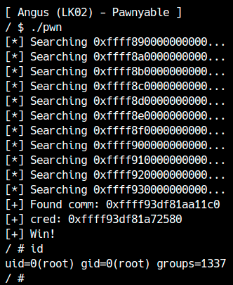

Most of the knowledge required for Kernel Exploit has already been explained in LK01, so from here on we will focus on detailed content such as attack methods specific to the kernel space and attacks on functions installed in the Linux kernel.
In LK02 (Angus), you will learn how to exploit NULL Pointer Dereference in kernel space. firstExercise LK02Please download the file.
About the vulnerabilities covered in this chapter
As you can see from the qemu startup options on LK02, SMAP is disabled on the machine targeted by this attack. NULL Pointer Dereference, which is treated in this chapter, cannot be exploited unless SMAP is disabled.
Also, try booting this kernel and entering the following command.
1 | $ cat /proc/sys/vm/mmap_min_addr |
mmap_min_addris a Linux kernel variable, and as the name suggests, it is accessed from userland.mmapLimits the smallest address that can be mapped to. Note that it is a non-zero value by default, but is set to 0 for this attack target. This variable was introduced in Linux kernel version 2.6.23 as a mitigation against NULL Pointer Dereference, which we will discuss in this article.
In this way, the contents of this chapter are based on the assumption that SMAP and mmap mitigation can be avoided, so if you are only interested in techniques that can be used in recent Linux, you can skip this.
Checking for vulnerabilities
First, let's read the source code of LK02. The source code issrc/angus.cIt is written in
ioctl
The major differences from LK01 are:read,writeis not implemented insteadioctlA handler for the system call is written. for file descriptorsioctlBy calling , the corresponding kernel or driverioctlhandler is called.
ioctlis not a file descriptor.request, argpIt takes two arguments.
1 | ioctl(fd, request, argp); |
requestPass the request code to operate the device. The request code is a value defined by each driver, so read the source code to understand what kind of requests can be sent.
argpcontains the data to pass to that device. Generally, this contains a pointer to user space data, and the kernel module sidecopy_from_userto read the request contents.
In this kernel module,request_tThis structure is passed from user space.
1 | typedef struct { |
Also,requestYou can also see how the processing changes depending on the code.
1 | switch (cmd) { |
ioctlBefore reading the implementation of the handler, let's take a look at theprivate_dataI will explain about it.
file structure
File descriptors are used when operating drivers etc. from user space, but on the kernel sidefile構造体received as.
The file structure has e.g.lseekcursor position set by[1]There is file-specific information such asprivate_dataThere is.
1 | struct file { |
private_dataIt doesn't matter what kind of data you put in , but of course the module must implement the data allocation and release correctly. In this driverXorCipherIt is used to store a unique structure called .
1 | static int module_open(struct inode *inode, struct file *filp) { |

Even with LK01-4 (Holstein v4), if you stored data here, no conflicts would occur.
Program overview
This program is a kernel module that can encrypt and decrypt data using XOR encryption.
This moduleioctlThe following five request codes are available.
1 |
firstCMD_INITWhen called withprivate_datatoXorCipherThe structure is stored.
1 | typedef struct { |
XorCipherStructure is the keykeyand its lengthkeylen,datadataand its lengthdatalenhas.
nextCMD_SETKEYWhen called withargpCopy the data passed as a key. If a key is already registered, release the old key first.
1 | case CMD_SETKEY: |
similarlyCMD_SETDATANow, copy the data you want to encrypt/decrypt from user space.
1 | case CMD_SETDATA: |
The encrypted/decrypted data isCMD_GETDATAYou can copy it to user space using .
1 | case CMD_GETDATA: |
lastlyCMD_ENCRYPTandCMD_DECRYPTSo,xorCall the function. (Since it is XOR encryption, the same algorithm is used for encryption and decryption.) If the data and key are not set, an error will occur.
1 | long xor(XorCipher *ctx) { |
Vulnerability research
This driver does not have any vulnerabilities such as buffer overflow or use-after-free. It may be hard to notice, but if you read carefully, there is a NULL Pointer Dereference in the encryption/decryption process.
firstioctlat the beginning ofprivate_datapointer toXorCipherGet as .
1 | ctx = (XorCipher*)filp->private_data; |
CMD_SETKEYetc.private_datais checked to see if it has been initialized.
1 | if (!ctx) return -EINVAL; |
but,CMD_GETDATA,CMD_ENCRYPT,CMD_DECRYPTdoes not have this check.
1 | long xor(XorCipher *ctx) { |
Therefore, when acquiring data or encrypting/decrypting, uninitializedXorCipher(that is, a NULL pointer).
Checking for vulnerabilities
First, let's call this module using the correct method. It is convenient to create a function corresponding to each request code.
1 | int angus_init(void) { |
As an example, let's encrypt and decrypt "Hello, World!" with the key "ABC123".
1 | int main() { |
It is a success if the data can be encrypted and decrypted.

Next, let's encrypt without initializing XorCipher.
1 | int main() { |
If you run this, you will probably run into a kernel panic like this:

Looking at the BUG item, it says "kernel NULL pointer dereference, address: 0000000000000008", which indicates that the crash occurred while trying to refer to a NULL pointer, as analyzed.
NULL pointer dereferences occur frequently in user-space programs, but this bug is usually not exploitable. So, how can we use this bug to escalate privileges?
Virtual memory and mmap_min_addr
Linux specificationsAs such, virtual memory has different uses depending on the address. for example0000000000000000from00007fffffffffffYou can use the user space freely until then. Also,ffffffff80000000fromffffffff9fffffffThis is the kernel data area and is mapped to physical address 0.

On Linux, 48-bit addresses are signed extended to 64 bits. Therefore, addresses from 0x800000000000 to 0xffff7ffffffffffff are invalid addresses and are called non-canonical.
0000000000000000from00007fffffffffffYou can use user space until That is, when address 0 is mapped, a NULL pointer reference can read or write data without causing a segmentation fault. When dereferencing a NULL pointer in kernel space, user space data can be read when SMAP is disabled, so an attacker can use data that was intentionally prepared at address 0.
mmapNormally, when the first argument is 0 (NULL), it is up to the kernel to decide which address to map to. but,MAP_FIXEDIf you map with a flag, it will always map to that address (or fail), and you can allocate memory at address 0. (Because KPTI is validMAP_POPULATELet's not forget that too. )
1 | mmap(0, 0x1000, PROT_READ|PROT_WRITE, |
The machine targeted for this attack can also allocate memory at address 0 using this method, but I think the above code will fail on the Linux machines you usually use.
On Linux, as a mitigation against NULL pointer dereferencemmap_min_addrThere is a variable called
1 | $ cat /proc/sys/vm/mmap_min_addr |
Memory cannot be mapped from user space to addresses smaller than this address. Therefore, NULL pointer dereference is normally unexploitable, but this attack target has this value set to 0, making it possible to attack.
Privilege escalation
XorCipherSince the structure is referenced by a NULL pointer, the attacker can place a fake one at address 0.XorCipherPrepare a structure.
1 | typedef struct { |
datapointer anddatalenIf you operateCMD_GETDATAYou can see that data can be read from any address. Also,datapointer anddatalen,moreoverkeyandkeylenIf you set it appropriately, you can rewrite data at any address.
Therefore, this vulnerability allows the creation of extremely powerful primitives called AAR/AAW.CMD_GETDATAWell thencopy_to_userto transfer data from kernel space to user space.
1 | if (copy_to_user(req.ptr, ctx->data, req.len)) return -EINVAL; |
copy_to_userorcopy_from_userfunctions are designed to fail without crashing if they are accidentally passed an unmapped address. Therefore, even if KASLR is enabled, if you decide on an appropriate address and read the data using brute force, you cancopy_to_useris successful.
In any case, let's create AAR/AAW and check the implementation by reading and writing user space data.
1 | XorCipher *nullptr = NULL; |
AAR/AAW was a success!

All you have to do is find the kernel base address,credLook for the structure or try escalating privileges using free methods. The sample exploit code ishereIt can be downloaded from.

credExperiment with methods such as finding the structure, finding the kernel base address, etc., and see which method is fastest on average. Also, what are the advantages and disadvantages of each method?Naturally
lseekThe handler must also be correctly implemented by the kernel module.↩︎